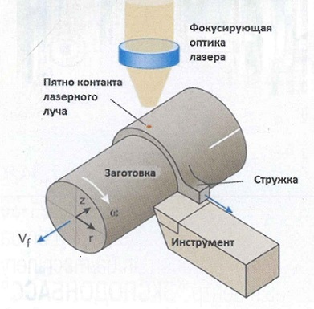

В результате стремительного удешевления сырья широкое распространение в точном машиностроении получают высокотехнологичные композитные материалы и сплавы, использовавшиеся ранее крайне ограниченно. За последние пять лет во всём мире существенно вырос процент применения подобных «составов» для повышения эксплуатационных качеств у привычных конструкционных материалов: придания дополнительной твёрдости, термальной стабильности, износостойкости. Технически большинство этих изделий должно быть изготовлено с прецизионной точностью и иметь высочайшую чистоту поверхностей, что подразумевает комплексную механическую обработку, сопряженную со значительным повышением себестоимости и технологического времени.
Все эти факторы послужили движущим механизмом исследований, нацеленных на разработку решений, повышающих экономическую и технологическую эффективность процессов механической обработки.
Финишную обработку с высокой точностью и качеством обрабатываемой поверхности в настоящее время производят с помощью фрезерования, точения и полировки. Однако большинство композитных материалов и сплавов являются труднообрабатываемыми, а в некоторых случаях их обработка с помощью традиционных технологий практически невозможна.
Одной из наиболее эффективных технологий, позволяющей производить эффективную обработку композитных материалов и сплавов, обладающей при этом невысокой стоимостью, является механическая обработка с использованием лазера.
На сегодняшний день возможности механическая обработка с использованием лазера применяются для обработки различных материалов, например, таких как металлокерамика, высокотемпературные сплавы, композиты. Во время обработки лазер производит интенсивный локальный нагрев участка перед режущим инструментом, при этом размер зоны нагрева и температура в ней регулируются площадью пятна контакта лазерного луча и его мощностью. Высокие температуры, создаваемые лазером в зоне резки, ведут к снижению сопротивляемости материала механической обработке, что приводит к увеличению скорости обработки, улучшению качества обрабатываемой поверхности, практически не воздействуя на структуру обрабатываемого материала (зона термического влияния ничтожна мала).
Современные методы компьютерного моделирования процессов позволяют рассчитать точную модель заготовки и симулировать весь процесс обработки с высокой степенью достоверности. На данный момент подобный метод успешно используется для подбора параметров лазера при процессах обработки композитных материалов фрезерным и токарным способами.
Второй метод основан на постоянном измерении температурного фона заготовки при помощи высокоточных пирометров. Данные, полученные в процессе, анализируются устройством, сопряженным с системой ЧПУ станка. Таким образом, рабочие параметры лазерного генератора корректируются непосредственно в процессе обработки на основании технологического алгоритма. Данный метод вполне применим для украинских предприятий благодаря отсутствию необходимости в сложном компьютерном моделировании — процесс контроля нагрева заготовки полностью автоматизирован.
Для нагрева заготовки использовались оптоволоконные лазеры мощностью 300-600 Вт.
Благодаря нагреву энергия, затрачиваемая на 1 мм2 реза снизилась до 3-6 Дж (при классических методах обработки затраты энергии составляют 40-100 Дж/мм2). Меньшие затраты механической энергии также обуславливают уменьшение структурных повреждений поверхностного слоя после обработки. Также отмечено, что при обработке с использованием лазера стружка имеет сегментированную структуру.
Данные исследования чётко показывают, что термическое влияние на заготовку перед обработкой не повлекло нежелательных последствий.
Отдельно следует рассмотреть влияние нагрева заготовки на износ режущего инструмента.
При обработке нитрида кремния методом механической обработки с использованием лазера использовались эльборовые (кубический нитрид бора) резцы. Стойкость этих резцов составила 40 минут непрерывной работы, что может считаться нормой даже для обработки нелегированных сталей, и является отличным результатом при обработке керамики. Износ инструмента локализован по задней поверхности, без следов язвенного износа. Расчёт экономической эффективности показал, что благодаря увеличению производительности, снижению расхода инструмента и отсутствию необходимости в дополнительных операциях (шлифовка) механическая обработка с использованием лазера позволяет снизить производственные затраты на обработку металлокерамики на 60-70%.
В отличие от керамики, обработка таких сплавов как Инконель 718, Ti6A14V, Waspaloy (Ni-58%, Cr-19%, Co-13%, Mo-4%, Ti-3%, Al-1,4%), закалённая сталь, уплотнённый серый чугун и композиты с металлической матрицей (КММ) успешно производится металлорежущим инструментом без применения лазера, однако процесс обработки этих материалов достаточно дорогой.
Механическая обработка с использованием лазера позволяет существенно снизить стоимость обработки за счёт снижения необходимого для резки механического усилия, увеличения срока службы режущего инструмента и улучшения качества обрабатываемой поверхности.
Рассмотрим экономическую эффективность механической обработки с использованием лазера при обработке Ti6A14V. При классических методах обработки основными проблемами являются низкая скорость обработки (менее 60 м/мин), и низкий ресурс инструмента. Для достижения максимального эффекта при обработке этого сплава с использованием лазерного нагрева также используют постоянное криоохлаждение инструмента.
Совместное использование механической обработки с использованием лазера и криоохлаждения позволило увеличить скорость обработки до 150-200 м/мин и добиться увеличения ресурса инструмента в 2-3 раза. Микроструктурный анализ показал отсутствие повреждений и изменений в обработанной поверхности. Полученный экономический эффект — снижение стоимости обработки на 30-40%.
Таким образом, технология механической обработки детали с помощью лазерного нагрева зоны обработки позволит предприятиям, активно работающим с керамикой, высоколегированными и упрочнёнными сталями, композитными материалами, титаном и пр. заметно снизить себестоимость продукции, при этом улучшив её качество.